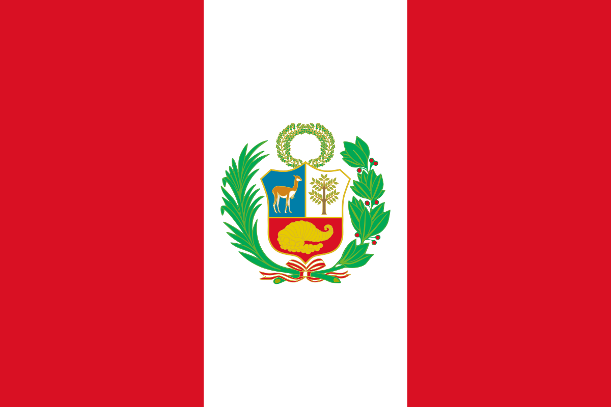

About Me
My name is Dallin Romero Talledo. I live in Lima, Peru. I am passionate about technology and programming. I love spending time with my family and learning new things.

Peru

Peru is a country located in South America, known for its Incan history, diverse landscapes including the Pacific coast, the Andes mountain range, and the Amazon rainforest, as well as its outstanding gastronomy. Its capital, Lima, is a vibrant city that combines tradition and modernity. Peru is home to wonders such as Machu Picchu, Cusco, and Lake Titicaca, offering a unique blend of culture, nature, and history.